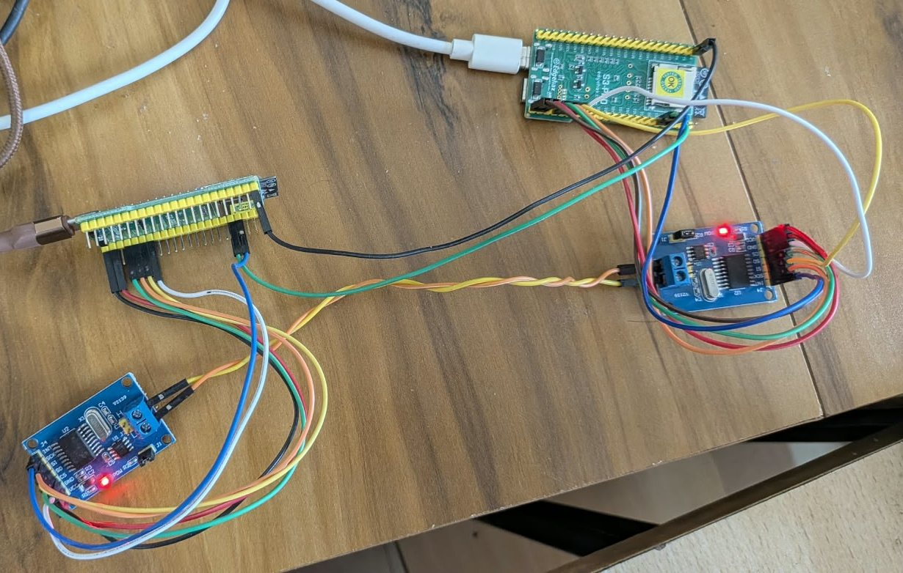

Help any embedded team take a feature from idea to a tested board without skipping the engineering.
Every requirement agreed, every gap named, every number computed, every step signed off by a person.
Proofline · built on the Safe-Stop Bench
Proofline takes one embedded or vehicle feature through six stages, from agreed requirements to wiring guides and firmware design notes. Code computes every number and every status. AI drafts, with your own key or not at all. You approve each stage, and the approval is locked to exactly what you approved.
Change an earlier stage and every later approval is flagged as stale. Nothing slips through on an old version.
Help any embedded team take a feature from idea to a tested board without skipping the engineering.
Every requirement agreed, every gap named, every number computed, every step signed off by a person.
The discipline of a large automotive programme, for teams of one to ten, at the cost of a few AI calls.
Traceable requirements, gated reviews and measured evidence, without a tooling licence or a systems-engineering department.
Anyone adding a feature to hardware that has to work the first time it's wired up.
EV, robotics, drones, IoT: a few engineers, no systems engineer, a deadline.
You get the scope checklist, gap list, CAN plan and wiring checks a big programme would run.
You need evidence a feature is ready, not a slide that says so.
You get approvals locked to the exact version, and stale work flagged on its own.
You want to learn how automotive teams actually take a feature to the bench.
You get a real, finished worked example to step through, and the same tool for your own project.
Proofline is how I work, made public: rules before AI, evidence before claims.
Each stage reads only approved work from the stages before it. Under each one is what it produced on the real pilot.
A chat (or a form) fills a 13-item checklist. A quote must really be in your words; "TBD" blocks completion until you decide.
Pilot: 13 items, 1 open decision carried forward.
Open stage 1 →Every need is checked against what your project already has, on six axes. Code decides covered, partial or missing; the parts list is proposed, never ordered.
Pilot: 20 needs, 34 gaps, 25 work items.
Open stage 2 →Functions go to boards, messages to CAN. Code allocates ids above your safety frames and works out the bus load and flash fit.
Pilot: 17 functions, 4 new CAN ids, 13 risks.
Open stage 3 →Pins against your board's limits, resistor dividers at every worst-case corner, transistor drivers, the power budget. Unknown currents stay unknown.
Pilot: 11 findings, including a supply flaw caught on paper.
Open stage 4 →Step-by-step wiring and measuring guides. You type each reading; code checks it against the expected range. The tool never touches a board.
Pilot: 4 guides; steps blocked until parts arrive.
Open stage 5 →Design notes per module, traced to needs, with every new behaviour behind a switch that starts off. Your owner decisions are recorded, and a maturity ladder runs from design (F0) to release (F5).
Pilot: 9 modules reached F3 (unit and mutation tests) on the PC.
Open stage 6 →What we measured on the pilot, and what Proofline takes off your plate.
Total AI time for the whole feature, across 11 calls. Each draft arrives in 10 to 60 seconds, so the slow part is your decision, not the writing.
From the first approved scope to approved firmware design notes, all six gates, on the calendar. That includes a night's sleep: the reviews themselves took seconds to minutes each.
We have not timed the same work done by hand yet, so there is no "hours saved" figure here. If you run a feature through Proofline and time it against your usual way, tell me and your measured result goes on this page.
Proofline is free. No account, no subscription, no data collection. The bench code is MIT-licensed on GitHub.
The measured AI cost of the whole pilot at API prices (163k tokens), on your own key and paid straight to your provider. With AI switched off it costs nothing.
Most AI tools write text you then have to check. Proofline flips it: code computes and checks, AI only fills in drafts, and nothing moves on without a person.
The model never marks a requirement done, a gap closed or a stage approved. A made-up quote, an unknown board or a bad CAN id is dropped by code, and the page says why.
Bus load, CAN ids, divider corners and transistor drivers are calculated step by step on the page. Estimates are labelled as estimates.
Each approval is locked to a SHA-256 of what was approved. Edit the scope and every later stage shows "stale" until it is redone.
| Proofline | Spreadsheet + an AI chat | Enterprise requirements tools | |
|---|---|---|---|
| Cost to start | Free | Free to low | Licences, admin |
| Time to first result | Minutes, in a browser | Minutes | Weeks of setup |
| Numbers computed by code | Yes, shown step by step | Whatever the chat says | Usually not for hardware |
| AI can mark work as done | Never | Nothing stops it | Depends on setup |
| Approval locked to the exact version | Yes, with stale detection | No | Yes |
| Wiring guides with checked readings | Yes | No | No |
| Many users, compliance workflows | Not yet: one browser, export to share | No | Yes |
Not every red test is a bug.
Proofline grew out of the Safe-Stop Bench, a test bench for an autonomous vehicle's safety layer. Its first feature, over-the-air updates, is the pilot you can explore.

The real bench HiL level
When a simulation or HiL test of an autonomous vehicle's safety layer goes red, the result doesn't say why. A product defect, a wrong test, a faulty bench and a missing requirement all look the same, so a triage lead has to find out which by hand, for every failure, before the right team can act and the release can move.
Every bench fault or wrong expectation filed as a defect sends an engineer after a bug that isn't in the product, while the real one waits in the queue.
Once red often means "the rig hiccuped", developers stop trusting the pre-merge signal, and the one real failure gets waved through with the rest.
The safety controller checks every command the AV planner sends and owns the safe stop. A fault it misses, or a test that wrongly says it caught one, goes straight to the vehicle.
Its first full HiL run produced 48 false FAILs from one dropped CAN link. Not one of them was a product bug.
With an AI agent that can't file a false defect on its own.
The agent does the legwork between the gates: drafting tests, running the bench, sorting every red result. The lead's time goes to three approvals and the release call, and in normal use nothing is filed until a human approves it.
Every push runs the controller as a separate process over CAN, in lockstep, and fails unless its timeline matches the Python reference exactly on all 56 scenarios. Seven CI jobs, Python 3.10 and 3.12.
Public CI on GitHubAn OpenModelica vehicle plant is built and graded on every push: 9/9 deliberately broken model variants are caught, and its stop verdicts match the bench on all 56 scenarios (stop distance within 0.03 m). Level 2 on a 0 to 4 maturity ladder.
Every non-PASS is labelled PRODUCT, TEST, BENCH or GAP. A failure on a wrong or silent board, or one that needed a rerun, becomes suspect bench and is never drafted as a defect.
Four reasons a test goes redPer-cycle traces with MDF4 export, board-side tick-hook timing, and passive bus audits that check every counter and CRC. Two hardware root causes were found this way.
Two hunts on real hardwareScenario runner, back-to-back comparer, HTML report, overflow audit, stall watcher, preflight with an error catalogue, failure-cluster dashboard and release verdict. 349 automated tests.
A model's first draft modelled a fault as a single counter jump. The bench rejected it with evidence; the redraft (30 ms out-of-order delivery) passed 7/7, and nothing false was filed.
Each approval is bound to the SHA-256 of the exact artifact approved. In a test mode the agent can approve for the lead; that is recorded as the agent's approval and never reused by a human-gated run.
Every version is tagged, and the exact back-to-back check is already a deterministic pass/fail oracle, which is what git bisect run needs to pin a regression to one change. That script is the next step; it isn't in the repo yet.
Where it came from. This loop began as a rebuild, on synthetic data, of an LLM + RAG test pipeline I prototyped at work for HIL campaigns, where engineers needed earlier, similar failures surfaced so they stopped re-solving the same root cause. Here it runs end to end on this bench, with no employer code or data.
Only one of them is a product bug. These are real cases from this bench's history, not hypotheticals.
The defect is in the device under test, and a test that fails for this reason is doing its job.
Cutting power at each persistent write found that the update path could boot a new image with no probation, so an unhealthy image would never roll back. Writes reordered; the cut-window checks now pass on the real board.
A second, valid command in the same cycle skipped the steering rate limit: 25° in 20 ms. Fixed in the Python reference and the C++ core; all existing tests still pass.
Treating these as defects wastes a developer's day and erodes trust in the gate.
The first full HiL run produced 48 false FAILs from a lost link. An observer-loss guard now marks the run as a bench fault instead.
Real-time runs on a loaded PC: 31/55 before reruns. Lockstep (the bench waits for the controller's own cycle counter): 54/55 + 1 known, 0 reruns.
The product behaved; the measurement or the expectation didn't.
Steering slew was judged on the PC's 20 ms clock, so 1 ms of arrival jitter turned a legal 48°/s into 72°/s. Judged on the board's own cycle counter: 2/8 false fails → 0/12.
Running without a human, the LLM drafted a test whose expected result was wrong. Re-running the case on a healthy controller flags it as suspect; it is redrafted with the evidence, never filed.
The requirement or the coverage is missing. These are the findings worth escalating.
With a dynamic plant, +800 kg makes a planned stop 34% longer with no diagnosis, and at +900 kg the brake check mistakes payload for a brake fault.
A black-box FMU with other names, units and state codes exposed 2 cold-start failures the scenario matrix had never covered.
Why it matters in a pre-merge gate: a gate that files bench faults and wrong expectations as defects trains developers to ignore it. Classifying first keeps the red signal meaningful.
The cheapest level that can catch a fault runs first. Each level is compared with the Python reference cycle by cycle, so a difference is a finding, not a guess.
An autonomous vehicle's planner sends protected commands; the safety controller (the device under test) checks every one and owns the safe stop. Faults are injected, and a vehicle model and an oracle decide pass or fail.
Layers added on top of the core bench, each with its own requirements, its own matrix and evidence that feeds one verdict.
A/B slots; SHA-256 plus HMAC over hash, size and version (no re-labelling an old image); a trial boot that commits only after 3 s healthy; rollback; resume after a lost chunk; power cut at every persistent write. Over the board's own Wi-Fi with TLS.
Seven attack kinds on the planner bus (flood, fuzzing, spoofing, replay, timing glitches, signal ramp) against an intrusion detector: no false alarms on 22 held-out clean runs, 12/12 on the real boards. One finding is tracked openly rather than hidden: a slow signal ramp that neither layer detects.
Port and firmware checks against an inventory, a UDS version read over the real bus and a partition audit. A failed preflight blocks the run and prints fixes from an error catalogue seeded from real bring-up faults.
Stated plainly, the same way the release verdict states its limits.
The two ESP32-S3 boards pictured at the top, on a 500 kbit/s CAN bus: board B is the safety controller, board A reads B's outputs from the bus. In both hunts the first explanation was wrong.
Board A saw old status frames reappear, turning a latched STOP into brief fake NORMAL blips. One HiL run dropped to 26/54.
Worn jumper wires. A dedicated SPI stress test showed 0 SPI errors on both boards.
First attributed to board B sending duplicates. The evidence pointed to the receiver, board A.
A's CAN-controller flag register read 0x02 for 0x01 at frame arrival, so the driver read a stale receive buffer.
Buffer rollover off, read one buffer only; then an alive counter + CRC-8 on the status frame, so a stale frame is rejected even on old firmware.
The 10 ms control loop on board B stalled 54–190 ms whenever MQTT connected over TLS; catch-up sends then overflowed the CAN transmit buffers and frames arrived out of order.
Lowering the MQTT task's priority looked fixed over 2 h idle. Retested properly: 18 of 19 handshakes still stalled.
Per-core FreeRTOS tick-hook tracing showed the MQTT task running on the control core, boosted to priority 23 by priority inheritance while it held its lock for the whole connect. No priority setting can fix that.
Pin the task to the other core with a linker wrap, and a firmware self-check that refuses to start the radio if the pin is missing.
Release checks REL-01 to REL-12 rerun on the new firmware: 12/12.
The method, not luck: state a hypothesis, build the instrument that can reject it, and prove the fix with the same instrument.
Public bench code: version 2.39. The private build is ahead, updated 22 October 2026, with 1,647 automated tests passing.
The browser edition runs every Proofline stage on your own project, with the same rules as the local tool. It has no server, and AI is optional with your own key. The local tool also scans a code repository, runs ngspice, and builds and mutation-tests firmware.
Five decisions from the pilot, each tied to the approved versions: programming traffic capped at 25 % of the bus, a per-board security secret kept out of source, two new CAN ids, and a supply floor of 3.7 V (abort at 3.0 V).
The board may reset before its supply ever reaches the 3.0 V abort level. A re-check partly confirmed it. The board's regulator part isn't recorded anywhere, so one bench measurement will settle it; nothing is assumed.
A module that starts switched off reads the supply divider and refuses an update when the CAN and ADC readings disagree. Its tests were written blind by a separate agent run: 52 of 55 mutants killed, 3 equivalent.
None of the new firmware has been flashed, and no new circuit fitted or measured. Those steps wait for the parts and for me.
A relay power cut of the controller board, CAN FD and a second bus sniffer. Results will appear here when they exist.
Yes. There is no account and no paid tier. If you switch AI on, you pay your own AI provider for your own usage; the pilot cost $0.63 at API prices.
Nowhere. Everything you type is saved in your browser only. The page has no server, no analytics and no third-party scripts. Export a request as a file to keep it or share it.
No. Without AI, code asks the questions and makes plain drafts you edit. With a key you get drafts in seconds. It works with Anthropic (Claude), OpenAI, or any OpenAI-compatible endpoint, including a local model.
It goes from your browser straight to the provider you pick, and by default it is forgotten when the tab closes. Use a key you can revoke, set a spending limit, and don't save it on a shared computer.
Not at the same time yet. One person works in one browser and exports the request; a colleague imports it. Shared workspaces are on the list.
No. Standards are used as a reference only. Proofline helps you build the evidence; it does not certify anything.
Never. It proposes parts and writes guides. You buy, wire, flash and measure, and record what you found.
Behind the bench
10+ years finding out why software fails on the bench and driving the fix to closure. At Daimler Truck I led MiL, SiL and HiL test strategy for adaptive cruise control, emergency braking and e-mobility functions, ran shared HiL and SiL benches used by five teams, and halved verification cycle time through structured root-cause analysis.
Proofline and this bench are how I work, made public: classify before you file, prove the fix with the instrument that found it, and let AI draft but never decide.
Free, in your browser, with or without AI. Start with the real pilot if you want to see the finished thing first.